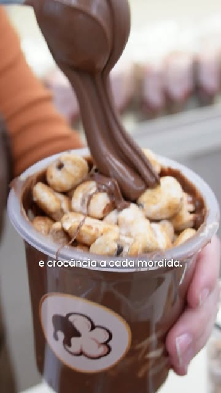
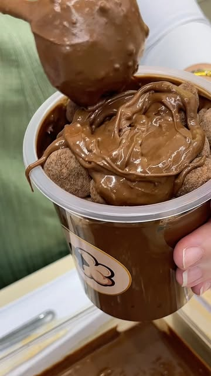
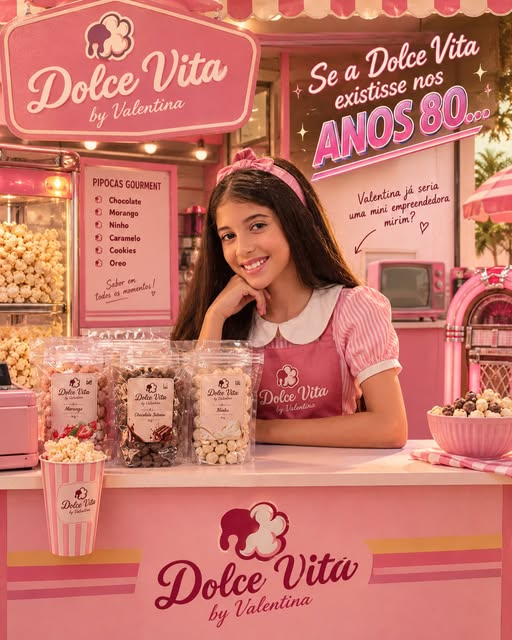
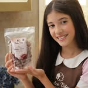
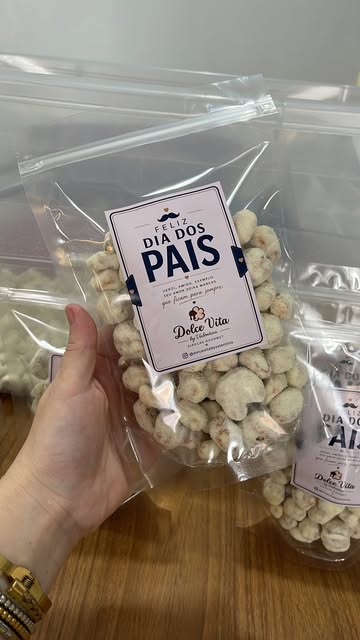

✳ PIPOCA GOURMET · SÃO BERNARDO DO CAMPO
É impossível
ficar só
na primeira.
Crocante por fora. Um carinho a cada mordida.
Descubra o seu novo jeito favorito de adoçar o dia.

vontade
de repetir ♡

PIPOCA + NUTELLA = ♡PRA QUEM QUER MAIS DE TUDO
O nome já diz.
Suprema.
Camadas generosas de Nutella e pipoca de milho de canjica caramelizada. Crocância e cremosidade no mesmo balde, com cobertura e topping à sua escolha.

um sonho quevirou doçura ♡
POR TRÁS DE CADA PIPOCA
Pequena no tamanho.
Gigante no sonho.
A Dolce Vita by Valentina se apresenta assim: uma pequena grande empreendedora tornando a vida mais doce.
Essa história ganha vida em pipocas gourmet, nos bastidores compartilhados no Instagram e em um quiosque cheio de cor no Supermercado Bem Barato, em São Bernardo do Campo.

Dolce Vita by Valentina ♡CARINHO QUE DÁ PARA PRESENTEAR
Um mimo.
Muitos sorrisos.
Uma lembrancinha doce para tornar a sua ocasião ainda mais especial. Fale com a Dolce Vita pelo Direct e consulte opções, quantidades e prazos.
Quero falar sobre lembrancinhas ↗
A MELHOR PARTE É EXPERIMENTAR
Sua pausa merece
um pouco de Dolce Vita.
Escolher meu doce no iFood ↗VENHA VIVER ESSE MOMENTO
Tem doçura
pertinho de você.
Quiosque no Supermercado Bem Barato
Av. Pereira Barreto, 1095Centro · São Bernardo do Campo – SP
CEP 09750-220
- Segunda a sábado
- 11h às 22h
- Domingo
- 11h às 20h
Endereço e horários consultados no Google Maps em 15/10/2026. Em feriados, confirme com a loja.